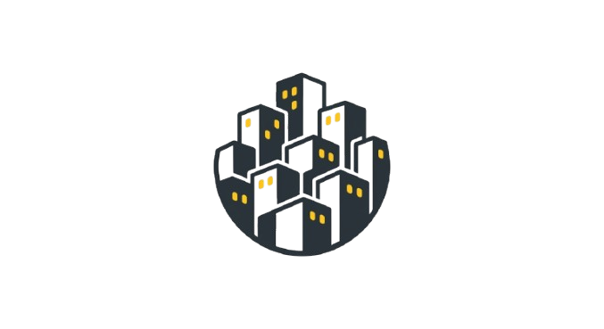

<div class="app-shell">
  <!-- Navegação Superior (Desktop) -->
  <mat-toolbar color="primary" class="top-nav mat-elevation-z4">
    <div class="brand">
      
      <span class="logo-text">Urban Glow</span>
    </div>
    <span class="spacer"></span>
    <div class="desktop-menu">
      @for (item of menuItems(); track item.path) {
      <a mat-button [routerLink]="item.path" routerLinkActive="active-link">
        <mat-icon>{{ item.icon }}</mat-icon>
        {{ item.label }}
      </a>
      }
    </div>
  </mat-toolbar>

  <!-- Conteúdo das Páginas com Animação -->
  <main class="main-content" [@routeAnimations]="prepareRoute(outlet)">
    <router-outlet #outlet="outlet"></router-outlet>
  </main>

  <!-- Navegação Inferior (Mobile) -->
  <nav class="bottom-nav">
    @for (item of menuItems(); track item.path) {
    <a [routerLink]="item.path" routerLinkActive="active-mobile" matRipple class="mobile-nav-item">
      <mat-icon>{{ item.icon }}</mat-icon>
      <!--span>{{ item.label }}</span-->
    </a>
    }
  </nav>
</div>